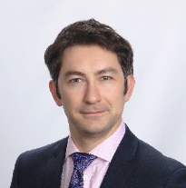
Emre Sarı
Bilkent Üniversitesi elektrik elektronik mühendisliği bölümünden mezun olduktan sonra master ve doktorasını yine aynı bölümde tamamlamıştır. Ardından postsoktorasını Brown Üniversitesi’de nanofotonik ve nöromühendislik üzerine yapmıştır. 2016’dan bu yana Fotonik bölüm başkan yardımcılığı üstlenmekte ve Esinotek’in kurucu ortağıdır.
Linkedin
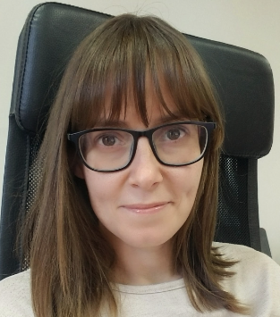
Nesli Erdoğmuş
Asistan Profesör Nesli Erdoğmuş lisansını (2005) ve yüksek lisansını (2008) ODTÜ'de Elektrik ve Elektronik Bölümünde tamamlamıştır. Doktorasını Çokluortam İletişim, Eurecom - Telecom ParisTech, Fransa'da (2012) yapmıştır. 2 yıllık Post Doktorasını ise Idiap İsviçre'de tamamlamıştır. 2014'te TUBITAK BIDEB projesinden kazanmış olduğu bursla İYTE Bilgisayar Mühendisliği'ne araştırmacı olarak gelmiştir. Daha sonra 2016'da İYTE Bilgisayar Mühendisliği'nde Asistan Profesör olarak devam etmiştir. İlgi alanı doğrultusunda kurduğu CSIGB araştırma grubunda ağırlıklı olarak yüz ve parmak izi tanıma üzerine araştırmalar yapmaya devam etmektedir.
Linkedin
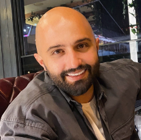
Alper Yanılmaz
Lisansını fizik ve malzeme bilimi mühendisliği bölümlerinde tamamlayan Alper Yanılmaz, Fotonik Anabilim Dalı'nda Prof. Dr. Cem Çelebi gözetiminde İYTE Fizik Anabilim Dalı'nda Kuantum Cihaz Laboratuvarı'nda (QDL) görev yapmaktadır.Aynı zamanda Bursa'da ERMAKSAN Optoelektronik Ar-Ge Merkezi'ne bağlı EON Fotonik'te Kıdemli Fotolitografi Sistemleri Mühendisi görevini üstlenmektedir.
Linkedin
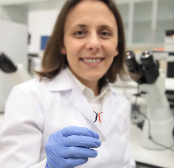
Devrim Pesen Okvur
Doktora derecesini Johns Hopkins Üniversitesi’nde (ABD) hücresel ve moleküler fizyoloji alanında 2005 yılında almıştır. Araştırmaları tümör mikroçevresini taklit eden minyatür laboratuvarların tasarımı ve üretimi ile meme kanserinde metastatik sürecin biyofiziksel ve mikro çevresel kontrolü üzerine odaklanmaktadır. TÜBA-GEBİP 2016 ve BAGEP 2016 ödül sahiplerinden biridir. Minyatür laboratuvarlar ile ilgili patentlere sahiptir. Ayrıca minyatür laboratuvarlar üzerinde uzmanlaşan Initio Cell (İngiltere) ve Initio Cell Biyoteknoloji (Türkiye) şirketlerinin kurucu ortağıdır.
Linkedin
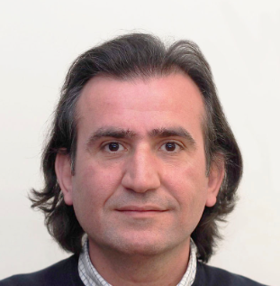
Fatih Toptan
2002 yılında sonrasında Yüksek Lisans ve Doktora derecelerini de tamamlayacağı YTÜ Metalurji ve Malzeme Mühendisliği Bölümü'nden mezun oldu. Doktorası sırasında bulunduğu Portekiz'in Minho Üniversitesi'nde doktora sonrası araştırmacı, misafir öğretim üyesi ve misafir bilim insanı olarak çalıştı. 2020 yılında İYTE'ye geçmiş ve halen burada doçent olarak çalışmaktadır. Bunun yanı sıra Portekiz'de bulunan Center for Micro Electro Mechanics Systems (CMEMS) araştırma merkezinin üyesi ve Biyomalzeme, Tribokorozyon ve Nanotıp Ensitüsü'nün Avrupa Şubesi'nin (IBTN/Euro) koordinatörüdür.
Linkedin
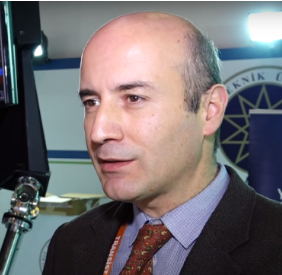
Vasfi Emre Ömürlü
Lisans ve Yüksek Lisans eğitimlerini birincilikle girdiği Yıldız Teknik Üniversitesi Makine Mühendisliği Bölümü'nde tamamladı. Yüksek lisans eğitimi sırasında, aynı üniversitenin, Makine Mühendlsiği Bölümü, Makine Teorisi, Sistem Dinamiği ve Kontrol A.D. na araştırma görevlisi olarak dahil oldu. 1996 senesinde gittiği A.B.D. The Ohio State University'de doktora çalışmalarını tıbbi robot uygulamaları konusunda tamamladı ve 2002'de Türkiye'ye döndü. 2008'de üniversitenin Mekatronik Mühendisliği Bölümü'nün kurucu üyeleri arasında yer aldı. Mekatronik Sistemler, Robot Uygulamaları, Paralel Robotlar, Uçuş Simülatörleri, İnsan Hareket Algısı, İnsansız Araçlar konularında pek çok proje ve yayında yer aldı. Halen kurucusu olduğu bölümde, Doçent olarak eğitim ve araştırma faaliyetlerine devam etmekte ve bölümün idari konularda danışmanlığını yürütmektedir.
Linkedin
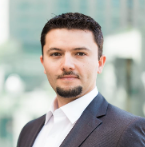
Atakan Ekiz
2009 da İYTE den mezun olan hocamız, 2018’de Utah Üniversitesi’nde (ABD) yüksek lisans ve doktorasını bitirmiştir. Şu anda aktif çalışma alanları Tümör immünolojisi, İmmünoterapi, Kodlanmayan RNA’lar, İmmünoloji, Biyoinformatik ve Hesaplamalı biyolojidir.
Linkedin
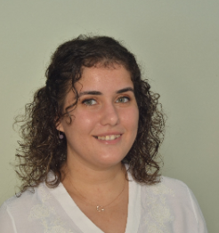
Hilal Sezer
2020 yılında Mekatronik mühendisliğinden mezun oldu. 1.hava jet üssü, Dronesavar silah üretimi yapan Harp Arge ve uzun dönemli olarak Kardemir A.Ş de stajlarını tamamladı şu anda ise aktif olarak Anotek Elektrik firmasında satış mühendisi olarak çalışmakta. Sahada koşturmaktan yorulmayan bir mühendis olarak geleceğin mühendis adaylarıyla tanışma fırsatı olacağı için çok heyecanlı.
Linkedin
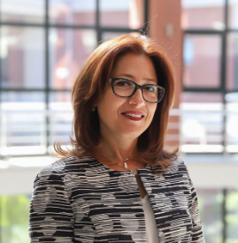
Funda Tıhmınlıoğlu
Ege Üniversitesi Kimya Mühendisliği Bölümünden 1990 yılında mezun olan Funda Tıhmınlıoğlu 1993 uılında yine Ege Üniversitesinde Kimya Mühendisliğinde yüksek lisansını tamamladı. Doktora için Amerikaya Pensilvanya Eyalet üniversitesine gitti. 1998 yılında Asistan Profesör olarak başladığı İzmir Yüksek Teknoloji Enstitüsü’nde Profesör olarak devam eden Funda Hanım 2011-2015 yılları arasında Mühendislik Fakültesi dekanlığı yapmış ve birçok ödül kazanmıştır.
Linkedin
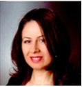
Hatice Bahadır Aydemir
1999 yılında Ege Üniversitesi Kimya bölümünden mezun olmuştur. 2009 yılında Orta Doğu Teknik Üniversitesi Kimya Mühendisliği bölümünden mezun olmuştur. 2010- 2011 yılları arasında Ciner Group (Eti Soda) da Kalite Kontrol Mühendisi olarak çalışmıştır. 2011-2014 yılları arasında Alacer Gold Altın Madenin de KG&KK Yönetcisi olarak çalışmıştır. 2016 yılından beri Sun Chemical da Kalite Sistem Süpervizörü olarak çalışmaktadır.
Linkedin
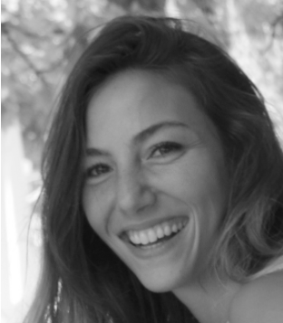
Tuğçe Zeynep Baçnak
Tuğçe Zeynep Baçnak, 2012 yılında Ege Üniversitesi Biyoloji bölümünden, 2017 yılında İYTE Mimarlık bölümünden, 2021 yılında İYTE Mimarlık bölümü Yüksek Lisans programından mezun olmuştur. Lisan mezuniyetinin ardından 2017-2019 yılları arasında mimarlık ofislerinde ruhsat ve uygulama projelerinde ve farklı ölçeklerdeki şantiyelerde görev almıştır. Şu anda İYTE'de araştırma görevlisi olarak çalışmakta ve doktora çalışmalarını sürdürmektedir. Çalışma alanları Yapı Bilgi Modellemesine geçiş süreci ve tasarımda biliş konularını içermektedir.
Linkedin
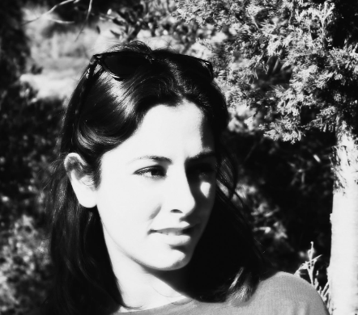
Yeliz Keskin
Yeliz Keskin 2016 yılında Dokuz Eylül Üniversitesi Mimarlık Fakültesi’nden, 2019 yılında Dokuz Eylül Üniversitesi Restorasyon Yüksek Lisans Programı’ndan mezun olmuştur. 2018 yılından bu yana İzmir Yüksek Teknoloji Enstitüsü Mimarlık Fakültesi’nde araştırma görevlisi olarak çalışmakta ve doktora çalışmalarını sürdürmektedir. Akademik çalışmalarının yanında mimari tasarım ve mimari yarışma pratiklerini de sürdürmektedir.
Linkedin
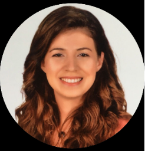
Fatma Merve Bayır Kanbur
Dokuz Eylül Üniversitesi Endüstri Mühendisliği'nden 2016 senesinde mezun oldu. Kendisi mezun olmadan iş hayatına girmiş genç kadın mühendislerdendir. Mezun olmadan Bosch TT ve Oerlikon Kaynak Elektrodlarında part-time olarak çalışmıştır. Mezuniyetinin ardından Teleset Elektromekanik Satınalma Mühendisi olarak görev almış ve son 4 yıldır E.C.A Valfsel Armatürde Yönetim Sistemleri Mühendisi olarak çalışmaktadır.
Linkedin
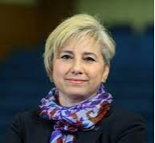
Ferda Yamanlar
Dokuz Eylül Üniversitesi , Makine Mühendisliği Bölümü’nden mezun olmuştur. 1990-2004 yılları arasında BMC San. ve Tic. A.Ş.’de Kalite Planlama Mühendisi olarak çalışmıştır. 2004’te Ege Üniv., Elektrik Bölümü’nde Öğretim Görevlisi olarak bir dönem eğitim vermiş, 2004- 2007 yılları arasında Türkiye Çimento Müstahsilleri Birliği'nde ve KAGİDER’in İnsan Kaynakları Yönetim Danışmanlığı konusundaki Avrupa Birliği Aktif İş Gücü Programı “Su Damlası Projesi”’nde yer almıştır. 2013 yılından bu yana ortağı olduğu MEMDA İç ve Dış Ticaret ve Danışmanlık Ltd. Şti.’de sanayi tipi görüntüleme cihazları konusunda çalışmaktadır. MMO İzmir Şubesi Kadın Mühendisler Komisyonu ve TMMOB İzmir İKK kadın Çalışma Grubu çalışmalarına katkı ve katılım sağlamaktadır.
Linkedin
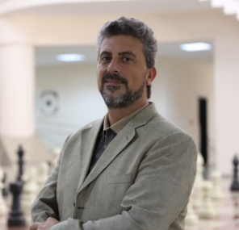
Ünver Özkol
1991 yılında İstanbul Teknik Üniversitesi Makine Mühendisliği bölümünden mezun olmuştur. 1993 yılında ABD’ye Chicagodaki Illinois Teknoloji Enstitüsüne giderek Makine ve Uzay Mühendisliği alanında yüksek lisans ve doktorasını tamamlamıştır. ASELSAN, İntel gibi sektörde öncü şirketlerde çalışan Ünver Özkol 2006 yılından beri İYTE Makine Mühendisliği Bölümünde öğretim üyesi olup şu anda Makine Mühendisliği bölüm başkanlığını yapmaktadır.
Linkedin
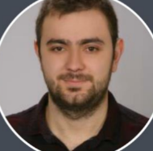
Uğur Kayacan
İstanbul Teknik Üniversitesi Metalurji ve Malzeme Mühendisliği Bölümünden 2019 yılında mezun oldu. Bununla birlikte 2015 yılında Uzay Mühendisliği Bölümünde çift anadal yaptı. Aynı bölümde halen yüksek lisansına devam ediyor. Şu anda yüksek lisansına devam eden Uğur Kayacan TUSAŞ-TAI de Yapısal Analiz Mühendisi olarak çalışmaktadır.
Linkedin
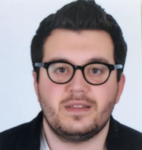
Eser Doğan
Lisans derecesini İstanbul Teknik Üniversitesi Makine Mühendisliğinde yapan Eser Doğan Tokyo Üniversitesinde Sistem Geliştirme üzerine mastır yapmıştır. 2020 yılında Tokyo Üniversitesinde başladığı doktora programına halen devam etmektedir. Arçelik, Enka gibi büyük firmalarda çalışmış, şu anda da Mitsubishi Chemical Holding’de proje mühendisi olarak çalışmaktadır.
Linkedin
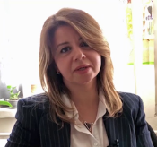
Özge Özdemir
2000 yılında İstanbul Teknik Üniversitesi Uçak Mühendisliği Bölümüne başlayıp 2012 yılında aynı bölüm üzerine lisans, yüksek lisans ve doktorasını tamamladı. 2013 yılında İTÜ Havacılık ve Uzay Mühendisliği bölümünde 2018 yılında ise Milli Savunma Üniversitesinde öğretim üyeliğine başladı ve devam ediyor.
Linkedin
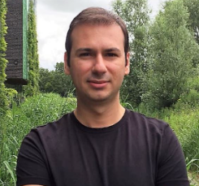
Korhan Deniz Dalgıç
Yıldız Teknik Üniversitesi İnşaat Mühendisliğinden 2007 yılında mezun olduktan sonra İstanbul Teknik Üniversitesinde yüksek lisans ve doktora eğitimlerini tamamlamıştır. Hollanda’da Delft Teknik Üniversitesinde misafir araştırmacı olarak çalışmıştır. 2019’da başladığı İzmir Yüksek Teknoloji Enstitüsü’nde öğretim üyesi olarak çalışmalarına devam etmektedir.
Linkedin
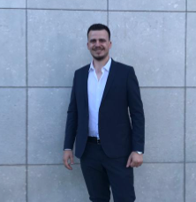
Mustafa Tanışan
İzmir Yüksek Teknoloji Enstitüsü İnşaat Mühendisliğinden mezun oldu. Mezun olduktantan sonra Tanfa İnşaat şirketinde saha mühendisi olarak görev aldı. 2020-2021 yıllarında İzmir Metro İnşaatında çalışmasının ardından UMAY TEKNİK YAPI İNŞAAT şirketinde şantiye şefi olarak görev aldı. Şu anda BATIBETON şirketinde üretim mühendisliği yapmakta.
Linkedin
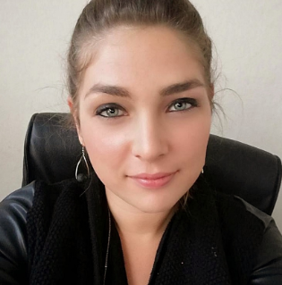
Begüm Yalçın Ümit
2012'de Ege Üniversitesi Biyomühendislik bölümünden mezun oldu. Yüksek lisansını Ege Üniversitesi Biyomühendislik Anabilim Dalı Biyomedikal Teknolojiler alanında yapan Begüm ÜMİT daha 2010-2016 tarihleri arasında Arge, Proje ve Kalite Mühendisi olarak çalıştı. BiosisMedikal Sistemleri AŞ'de başladığı Tıbbi Cihaz Üretimi Kalite Yönetimi alanında hala kariyerine devam etmektedir.
Linkedin
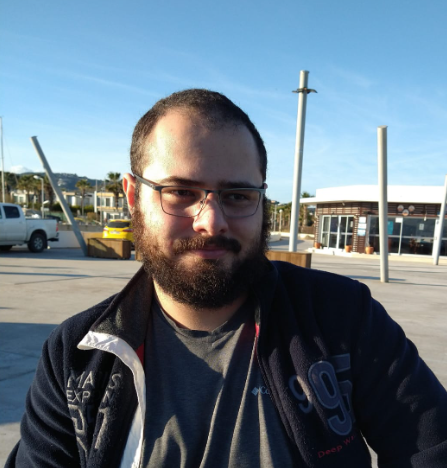
Yağızhan Arslan Akıncı
2015- 2018 yılları arasında Yeditepe Üniversitesi’nde Bilgisayar Mühendisliği bölümüne başlayıp eğitimini 2021 yılında Manisa Celal Bayar Üniversitesi’nde bitirmiştir. Hala Manisa Celal Bayar Üniversitesi’nde Bilgisayar Mühendisliği Yüksek Lisans eğitimi almaktadır. Ayrıca Zackai Bilişim Teknolojileri A.Ş.de farklı zaman aralıklarında staj yapmıştır. 2022 Ağustos itibariyle İnnosa Bilişim Teknolojileri A.Ş.de Yapay Zeka Uzmanı olarak görevine devam etmektedir.
Linkedin